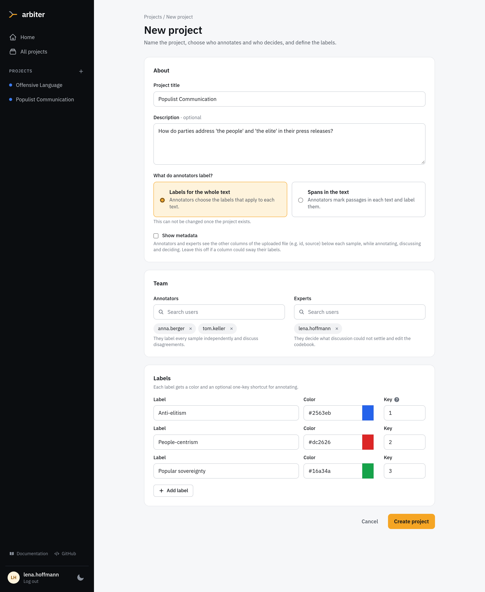

Create a project
A project brings together the texts you want annotated, the people who work on them, the labels they use and the codebook that explains those labels. Anyone with an account can create one; whoever creates it becomes its owner.
Open the form
Click New project on the home page or under All projects, or + next to Projects in the sidebar.


The form, filled in for a project on populist communication.
About
Project title and Description appear in the project lists and at the top of the project page. The description is a good place for the research question.
What do annotators label? decides how the project works:
Labels for the whole text: annotators choose every label that applies to a text, see Annotate.
Spans in the text: annotators mark the passages a label applies to, see Annotate.
This cannot be changed once the project exists.
Show metadata: annotators and experts see the other columns of your uploaded file, such as a source or a date, below each text. Leave it off if a column could sway their labels. You can change this later under Settings on the project page.
Team
Choose the Annotators, who label every text on their own and discuss where they disagree, and the Experts, who decide what the discussion could not settle and edit the codebook. Type part of a username to find someone; × removes them again. A project needs at least one of each, and nobody can be both.
Add yourself as an expert if you run the project. The project page with its batches, the codebook editor and the exports are open to the experts of the project only: if you leave yourself out, you cannot open the project you created.
Who belongs to the project is set here. When you upload a batch, you choose which of these people annotate it and which decide, see Upload data.
Labels
Every label has
a name, as annotators see it,
a color, in which it appears wherever the label is shown,
a key: pressing it while annotating chooses the label. New rows get the next free number; leave the field empty for no key.
Add label adds another row; rows without a name are left out. No two labels can have the same name or the same key.
The labels cannot be changed once the project exists. Keep their names short: what a label means and where its limits are belongs in the codebook.
Create it
Click Create project. The project page opens; it is empty until you upload the first batch. Before that, write the first version of the codebook: every batch starts with the codebook as it is at that moment, and that is the version annotators see as their starting point.